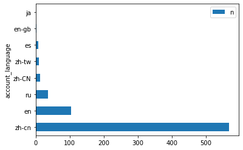
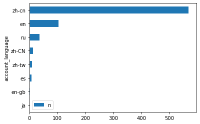
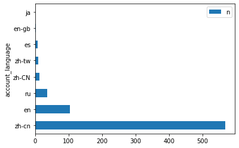
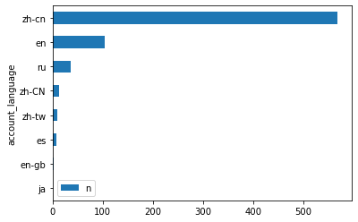

Pandas: filter, select, and timeline process#
P1. Load data (twitter account)#
import pandas as pd
user_df = pd.read_csv("https://raw.githubusercontent.com/p4css/py4css/main/data/twitter_user1_hashed.csv")
user_df.head()
/Users/jirlong/opt/anaconda3/lib/python3.9/site-packages/pandas/core/computation/expressions.py:21: UserWarning: Pandas requires version '2.8.4' or newer of 'numexpr' (version '2.8.1' currently installed).
from pandas.core.computation.check import NUMEXPR_INSTALLED
/Users/jirlong/opt/anaconda3/lib/python3.9/site-packages/pandas/core/arrays/masked.py:60: UserWarning: Pandas requires version '1.3.6' or newer of 'bottleneck' (version '1.3.4' currently installed).
from pandas.core import (
---------------------------------------------------------------------------
HTTPError Traceback (most recent call last)
Input In [1], in <cell line: 2>()
1 import pandas as pd
----> 2 user_df = pd.read_csv("https://raw.githubusercontent.com/p4css/py4css/main/data/twitter_user1_hashed.csv")
3 user_df.head()
File ~/opt/anaconda3/lib/python3.9/site-packages/pandas/io/parsers/readers.py:1026, in read_csv(filepath_or_buffer, sep, delimiter, header, names, index_col, usecols, dtype, engine, converters, true_values, false_values, skipinitialspace, skiprows, skipfooter, nrows, na_values, keep_default_na, na_filter, verbose, skip_blank_lines, parse_dates, infer_datetime_format, keep_date_col, date_parser, date_format, dayfirst, cache_dates, iterator, chunksize, compression, thousands, decimal, lineterminator, quotechar, quoting, doublequote, escapechar, comment, encoding, encoding_errors, dialect, on_bad_lines, delim_whitespace, low_memory, memory_map, float_precision, storage_options, dtype_backend)
1013 kwds_defaults = _refine_defaults_read(
1014 dialect,
1015 delimiter,
(...)
1022 dtype_backend=dtype_backend,
1023 )
1024 kwds.update(kwds_defaults)
-> 1026 return _read(filepath_or_buffer, kwds)
File ~/opt/anaconda3/lib/python3.9/site-packages/pandas/io/parsers/readers.py:620, in _read(filepath_or_buffer, kwds)
617 _validate_names(kwds.get("names", None))
619 # Create the parser.
--> 620 parser = TextFileReader(filepath_or_buffer, **kwds)
622 if chunksize or iterator:
623 return parser
File ~/opt/anaconda3/lib/python3.9/site-packages/pandas/io/parsers/readers.py:1620, in TextFileReader.__init__(self, f, engine, **kwds)
1617 self.options["has_index_names"] = kwds["has_index_names"]
1619 self.handles: IOHandles | None = None
-> 1620 self._engine = self._make_engine(f, self.engine)
File ~/opt/anaconda3/lib/python3.9/site-packages/pandas/io/parsers/readers.py:1880, in TextFileReader._make_engine(self, f, engine)
1878 if "b" not in mode:
1879 mode += "b"
-> 1880 self.handles = get_handle(
1881 f,
1882 mode,
1883 encoding=self.options.get("encoding", None),
1884 compression=self.options.get("compression", None),
1885 memory_map=self.options.get("memory_map", False),
1886 is_text=is_text,
1887 errors=self.options.get("encoding_errors", "strict"),
1888 storage_options=self.options.get("storage_options", None),
1889 )
1890 assert self.handles is not None
1891 f = self.handles.handle
File ~/opt/anaconda3/lib/python3.9/site-packages/pandas/io/common.py:728, in get_handle(path_or_buf, mode, encoding, compression, memory_map, is_text, errors, storage_options)
725 codecs.lookup_error(errors)
727 # open URLs
--> 728 ioargs = _get_filepath_or_buffer(
729 path_or_buf,
730 encoding=encoding,
731 compression=compression,
732 mode=mode,
733 storage_options=storage_options,
734 )
736 handle = ioargs.filepath_or_buffer
737 handles: list[BaseBuffer]
File ~/opt/anaconda3/lib/python3.9/site-packages/pandas/io/common.py:384, in _get_filepath_or_buffer(filepath_or_buffer, encoding, compression, mode, storage_options)
382 # assuming storage_options is to be interpreted as headers
383 req_info = urllib.request.Request(filepath_or_buffer, headers=storage_options)
--> 384 with urlopen(req_info) as req:
385 content_encoding = req.headers.get("Content-Encoding", None)
386 if content_encoding == "gzip":
387 # Override compression based on Content-Encoding header
File ~/opt/anaconda3/lib/python3.9/site-packages/pandas/io/common.py:289, in urlopen(*args, **kwargs)
283 """
284 Lazy-import wrapper for stdlib urlopen, as that imports a big chunk of
285 the stdlib.
286 """
287 import urllib.request
--> 289 return urllib.request.urlopen(*args, **kwargs)
File ~/opt/anaconda3/lib/python3.9/urllib/request.py:214, in urlopen(url, data, timeout, cafile, capath, cadefault, context)
212 else:
213 opener = _opener
--> 214 return opener.open(url, data, timeout)
File ~/opt/anaconda3/lib/python3.9/urllib/request.py:523, in OpenerDirector.open(self, fullurl, data, timeout)
521 for processor in self.process_response.get(protocol, []):
522 meth = getattr(processor, meth_name)
--> 523 response = meth(req, response)
525 return response
File ~/opt/anaconda3/lib/python3.9/urllib/request.py:632, in HTTPErrorProcessor.http_response(self, request, response)
629 # According to RFC 2616, "2xx" code indicates that the client's
630 # request was successfully received, understood, and accepted.
631 if not (200 <= code < 300):
--> 632 response = self.parent.error(
633 'http', request, response, code, msg, hdrs)
635 return response
File ~/opt/anaconda3/lib/python3.9/urllib/request.py:561, in OpenerDirector.error(self, proto, *args)
559 if http_err:
560 args = (dict, 'default', 'http_error_default') + orig_args
--> 561 return self._call_chain(*args)
File ~/opt/anaconda3/lib/python3.9/urllib/request.py:494, in OpenerDirector._call_chain(self, chain, kind, meth_name, *args)
492 for handler in handlers:
493 func = getattr(handler, meth_name)
--> 494 result = func(*args)
495 if result is not None:
496 return result
File ~/opt/anaconda3/lib/python3.9/urllib/request.py:641, in HTTPDefaultErrorHandler.http_error_default(self, req, fp, code, msg, hdrs)
640 def http_error_default(self, req, fp, code, msg, hdrs):
--> 641 raise HTTPError(req.full_url, code, msg, hdrs, fp)
HTTPError: HTTP Error 404: Not Found
1.1 Drop columns#
user_df.drop(columns=['user_reported_location', 'user_profile_description', 'user_profile_url'], inplace=True)
user_df.head()
| userid | user_display_name | user_screen_name | follower_count | following_count | account_creation_date | account_language | |
|---|---|---|---|---|---|---|---|
| 0 | vMm2zemFOF7kmXoDyX24Bo+TorqhNutpZlATYyxsE= | vMm2zemFOF7kmXoDyX24Bo+TorqhNutpZlATYyxsE= | vMm2zemFOF7kmXoDyX24Bo+TorqhNutpZlATYyxsE= | 1 | 52 | 2017-08-30 | zh-cn |
| 1 | 919755217121316864 | ailaiyi5 | wuming11xia | 0 | 0 | 2017-10-16 | zh-cn |
| 2 | 747292706536226816 | 牛小牛 | gurevadona88 | 23949 | 52 | 2016-06-27 | zh-cn |
| 3 | q2SMGvHasu+nugbpNMDCjr2qlZp3FCiGYDLht+gW5pw= | q2SMGvHasu+nugbpNMDCjr2qlZp3FCiGYDLht+gW5pw= | q2SMGvHasu+nugbpNMDCjr2qlZp3FCiGYDLht+gW5pw= | 17 | 34 | 2016-08-08 | es |
| 4 | 907348345563303940 | lishuishi | lishuishi | 0 | 0 | 2017-09-11 | zh-tw |
user_df.columns
user_df.dtypes
userid object
user_display_name object
user_screen_name object
follower_count int64
following_count int64
account_creation_date object
account_language object
dtype: object
P2. Tweets over time#
2.1 Convert str to datetime#
https://pandas.pydata.org/docs/reference/api/pandas.Series.dt.to_period.html
https://pandas.pydata.org/docs/user_guide/timeseries.html#timeseries-offset-aliases
user_df['account_creation_date'] = pd.to_datetime(user_df['account_creation_date'], format="%Y-%m-%d")
user_df.dtypes
userid object
user_display_name object
user_screen_name object
follower_count int64
following_count int64
account_creation_date datetime64[ns]
account_language object
dtype: object
# drug_df.groupby('pubMediaType')['pname', 'agency'].count()
user_df.groupby('account_creation_date')['userid'].count()
account_creation_date
2008-05-16 1
2008-07-31 1
2008-11-19 1
2009-01-29 1
2009-02-03 1
..
2019-04-28 1
2019-04-29 2
2019-05-03 8
2019-05-05 2
2019-05-07 2
Name: userid, Length: 289, dtype: int64
user_df['account_creation_year'] = user_df['account_creation_date'].apply(lambda x:x.year)
user_df.head()
| userid | user_display_name | user_screen_name | follower_count | following_count | account_creation_date | account_language | account_creation_year | |
|---|---|---|---|---|---|---|---|---|
| 0 | vMm2zemFOF7kmXoDyX24Bo+TorqhNutpZlATYyxsE= | vMm2zemFOF7kmXoDyX24Bo+TorqhNutpZlATYyxsE= | vMm2zemFOF7kmXoDyX24Bo+TorqhNutpZlATYyxsE= | 1 | 52 | 2017-08-30 | zh-cn | 2017 |
| 1 | 919755217121316864 | ailaiyi5 | wuming11xia | 0 | 0 | 2017-10-16 | zh-cn | 2017 |
| 2 | 747292706536226816 | 牛小牛 | gurevadona88 | 23949 | 52 | 2016-06-27 | zh-cn | 2016 |
| 3 | q2SMGvHasu+nugbpNMDCjr2qlZp3FCiGYDLht+gW5pw= | q2SMGvHasu+nugbpNMDCjr2qlZp3FCiGYDLht+gW5pw= | q2SMGvHasu+nugbpNMDCjr2qlZp3FCiGYDLht+gW5pw= | 17 | 34 | 2016-08-08 | es | 2016 |
| 4 | 907348345563303940 | lishuishi | lishuishi | 0 | 0 | 2017-09-11 | zh-tw | 2017 |
# df['account_creation_ym'] = df['account_creation_date'].apply(lambda x:x.floor("M"))
# user_df['account_creation_ym'] = user_df['account_creation_date'].dt.to_period("M")
user_df['account_creation_ym'] = user_df['account_creation_date'].apply(lambda x:x.to_period('M'))
user_df.head()
| userid | user_display_name | user_screen_name | follower_count | following_count | account_creation_date | account_language | account_creation_year | account_creation_ym | |
|---|---|---|---|---|---|---|---|---|---|
| 0 | vMm2zemFOF7kmXoDyX24Bo+TorqhNutpZlATYyxsE= | vMm2zemFOF7kmXoDyX24Bo+TorqhNutpZlATYyxsE= | vMm2zemFOF7kmXoDyX24Bo+TorqhNutpZlATYyxsE= | 1 | 52 | 2017-08-30 | zh-cn | 2017 | 2017-08 |
| 1 | 919755217121316864 | ailaiyi5 | wuming11xia | 0 | 0 | 2017-10-16 | zh-cn | 2017 | 2017-10 |
| 2 | 747292706536226816 | 牛小牛 | gurevadona88 | 23949 | 52 | 2016-06-27 | zh-cn | 2016 | 2016-06 |
| 3 | q2SMGvHasu+nugbpNMDCjr2qlZp3FCiGYDLht+gW5pw= | q2SMGvHasu+nugbpNMDCjr2qlZp3FCiGYDLht+gW5pw= | q2SMGvHasu+nugbpNMDCjr2qlZp3FCiGYDLht+gW5pw= | 17 | 34 | 2016-08-08 | es | 2016 | 2016-08 |
| 4 | 907348345563303940 | lishuishi | lishuishi | 0 | 0 | 2017-09-11 | zh-tw | 2017 | 2017-09 |
sum_df = user_df.groupby('account_creation_ym')['userid'].count().reset_index(name='n')
type(sum_df)
sum_df
| account_creation_ym | n | |
|---|---|---|
| 0 | 2008-05 | 1 |
| 1 | 2008-07 | 1 |
| 2 | 2008-11 | 1 |
| 3 | 2009-01 | 1 |
| 4 | 2009-02 | 1 |
| ... | ... | ... |
| 98 | 2019-01 | 8 |
| 99 | 2019-02 | 12 |
| 100 | 2019-03 | 4 |
| 101 | 2019-04 | 4 |
| 102 | 2019-05 | 12 |
103 rows × 2 columns
P3. Iterate each row of dataframe#
for index, row in sum_df.iterrows():
print(row['account_creation_ym'], row['n'])
2008-05 1
2008-07 1
2008-11 1
2009-01 1
2009-02 1
2009-03 1
2009-04 4
2009-05 1
2009-06 1
2009-07 4
2009-09 5
2009-10 1
2009-12 1
2010-01 2
2010-02 1
2010-03 2
2010-04 2
2010-06 4
2010-08 1
2010-09 1
2010-10 1
2010-11 2
2010-12 1
2011-01 1
2011-02 1
2011-03 3
2011-05 1
2011-06 2
2011-07 1
2011-08 4
2011-09 2
2011-11 3
2011-12 2
2012-01 2
2012-02 1
2012-03 2
2012-04 2
2012-06 1
2012-07 1
2012-08 2
2012-11 3
2012-12 3
2013-01 3
2013-02 4
2013-03 20
2013-04 1
2013-06 2
2013-07 2
2013-08 1
2013-09 1
2013-10 3
2013-11 3
2013-12 2
2014-01 1
2014-02 2
2014-03 1
2014-04 1
2014-05 3
2014-08 2
2014-10 1
2014-11 1
2015-01 3
2015-02 1
2015-04 2
2015-06 1
2015-07 3
2015-09 1
2015-10 5
2015-11 7
2015-12 6
2016-01 4
2016-02 3
2016-04 2
2016-05 1
2016-06 41
2016-07 9
2016-08 7
2016-09 1
2016-10 4
2016-11 1
2017-01 1
2017-02 2
2017-06 4
2017-07 11
2017-08 237
2017-09 28
2017-10 80
2017-11 47
2017-12 6
2018-01 1
2018-02 2
2018-03 9
2018-04 7
2018-07 15
2018-08 1
2018-10 8
2018-11 2
2018-12 10
2019-01 8
2019-02 12
2019-03 4
2019-04 4
2019-05 12
3.1 Plotting#
https://www.w3schools.com/python/pandas/pandas_plotting.asp
# %matplotlib widget
# %matplotlib inline
import pandas as pd
import matplotlib.pyplot as plt
sum_df.plot(x = 'account_creation_ym', y = 'n')
# plt.show()
plt.savefig('fig.pdf')
P4. Twitter User Productivity#
lang_count = user_df.groupby('account_language')["userid"].count()
toplot = lang_count.reset_index(name="n").sort_values('n', ascending=False)
toplot.plot(kind="bar", x="account_language")
toplot.plot(kind="barh", x="account_language")
toplot.plot.barh(x="account_language").invert_yaxis()
plt.show()
 



P5. Filter rows by column value (Very Important)#
Load data (drug ill-ad)#
import pandas as pd
drug_df = pd.read_csv('https://raw.githubusercontent.com/p4css/py4css/main/data/drug_156_2.csv')
# drug_df
drug_df.columns
Index(['違規產品名稱', '違規廠商名稱或負責人', '處分機關', '處分日期', '處分法條', '違規情節', '刊播日期',
'刊播媒體類別', '刊播媒體', '查處情形'],
dtype='object')
drug_df
| 違規產品名稱 | 違規廠商名稱或負責人 | 處分機關 | 處分日期 | 處分法條 | 違規情節 | 刊播日期 | 刊播媒體類別 | 刊播媒體 | 查處情形 | |
|---|---|---|---|---|---|---|---|---|---|---|
| 0 | 維他肝 | 豐怡生化科技股份有限公司/朱O | NaN | 03 31 2022 12:00AM | NaN | 廣告內容誇大不實 | 02 2 2022 12:00AM | 廣播電台 | 噶瑪蘭廣播電台股份有限公司 | NaN |
| 1 | 現貨澳洲Swisse ULTIBOOST維他命D片calcium vitamin VITAM... | 張O雯/張O雯 | NaN | 01 21 2022 12:00AM | NaN | 廣告違規 | 11 30 2021 12:00AM | 網路 | 蝦皮購物 | 輔導結案 |
| 2 | ✈日本 代購 參天製藥 處方簽點眼液 | 蘇O涵/蘇O涵 | NaN | 01 25 2022 12:00AM | NaN | 無照藥商 | 08 27 2021 12:00AM | 網路 | 蝦皮購物 | NaN |
| 3 | ✈日本 代購 TSUMURA 中將湯 24天包裝 | 蘇O涵/蘇O涵 | NaN | 01 25 2022 12:00AM | NaN | 無照藥商 | 08 27 2021 12:00AM | 網路 | 蝦皮購物 | 輔導結案 |
| 4 | _Salty.shop 日本代購 樂敦小花 | 曾O嫺/曾O嫺 | NaN | 02 17 2022 12:00AM | 藥事法第27條 | 無照藥商 | 12 6 2021 12:00AM | 網路 | 蝦皮購物 | 處分結案 |
| ... | ... | ... | ... | ... | ... | ... | ... | ... | ... | ... |
| 2967 | *健人館* 千鶴薄荷棒11g*2個 | 新東海藥局/ O聰敏 | NaN | NaN | 藥事法第27條 | 標示內容與規定不符 | 05 6 2020 12:00AM | 網路 | NaN | 處分結案 |
| 2968 | （現貨）GO LIVER DETOX 高之源 護肝排毒膠囊 120粒 | 連O毅/連O毅 | NaN | 06 30 2020 12:00AM | 藥事法第27條 | 無照藥商 | 02 5 2020 12:00AM | 網路 | 蝦皮購物 | 處分結案 |
| 2969 | 日本帶回樂敦小花新鮮貨 | 張O萍/張O萍 | NaN | 06 23 2020 12:00AM | NaN | 難以判定產品屬性 | 03 10 2020 12:00AM | 網路 | 蝦皮購物 | 輔導結案 |
| 2970 | 全新 洗眼杯 可平信 洗眼 小林製藥 小花 ROHTO Lycee 可搭配生理食鹽水 空汙 ... | 盧O/盧O | NaN | 09 4 2020 12:00AM | NaN | 無照藥商 | 03 10 2020 12:00AM | 網路 | 蝦皮購物 | 輔導結案 |
| 2971 | 0.9%生理食鹽水 20ml 預購最低價 每人限購2盒 | 張O軒/張O軒 | NaN | 06 11 2020 12:00AM | NaN | 無照藥商 | 03 31 2020 12:00AM | 網路 | 蝦皮購物 | NaN |
2972 rows × 10 columns
5.1 Detecting patterns in strings by str.contains()#
Python | Pandas Series.str.contains() - GeeksforGeeks
pat = '假[\s\S]{0,6}新聞|假[\s\S]{0,6}消息|不實[\s\S]{0,6}新聞|不實[\s\S]{0,6}消息|假[\s\S]{0,6}訊息|不實[\s\S]{0,6}訊息'
filtered_comment = comment[comment['ccontent'].str.contains(pat=pat, na=False)]
pat = '代購|帶回'
filtered_drug_df = drug_df[drug_df['違規產品名稱'].str.contains(pat=pat, na=False)]
filtered_drug_df
| 違規產品名稱 | 違規廠商名稱或負責人 | 處分機關 | 處分日期 | 處分法條 | 違規情節 | 刊播日期 | 刊播媒體類別 | 刊播媒體 | 查處情形 | |
|---|---|---|---|---|---|---|---|---|---|---|
| 2 | ✈日本 代購 參天製藥 處方簽點眼液 | 蘇O涵/蘇O涵 | NaN | 01 25 2022 12:00AM | NaN | 無照藥商 | 08 27 2021 12:00AM | 網路 | 蝦皮購物 | NaN |
| 3 | ✈日本 代購 TSUMURA 中將湯 24天包裝 | 蘇O涵/蘇O涵 | NaN | 01 25 2022 12:00AM | NaN | 無照藥商 | 08 27 2021 12:00AM | 網路 | 蝦皮購物 | 輔導結案 |
| 4 | _Salty.shop 日本代購 樂敦小花 | 曾O嫺/曾O嫺 | NaN | 02 17 2022 12:00AM | 藥事法第27條 | 無照藥商 | 12 6 2021 12:00AM | 網路 | 蝦皮購物 | 處分結案 |
| 9 | 現貨正品 Eve 快速出貨 日本代購 白兔60 藍兔 40 eve 金兔 EVE 兔子 娃娃... | 張O恩/張O恩 | NaN | 03 4 2022 12:00AM | NaN | 無照藥商 | 12 21 2021 12:00AM | 網路 | 蝦皮拍賣網站 | 輔導結案 |
| 18 | [海外代購]纈草根膠囊-120毫克-240粒-睡眠 | 江O君/江O君 | NaN | 03 15 2022 12:00AM | NaN | 無照藥商 | 08 2 2021 12:00AM | 網路 | 蝦皮購物 | NaN |
| ... | ... | ... | ... | ... | ... | ... | ... | ... | ... | ... |
| 2947 | 「泰國代購🇹🇭」泰國🇹🇭Hirudoid強效去疤膏（預購） | 魏O芝/魏O芝 | NaN | 06 5 2020 12:00AM | 藥事法第27條 | 無照藥商 | 12 17 2019 12:00AM | 網路 | 蝦皮購物 | 處分結案 |
| 2948 | eBuy美國代購美国正品GNC银杏叶精华提高增强记忆力预防老年痴呆补脑健脑 | 蕭O雄/蕭O雄 | NaN | NaN | NaN | 無照藥商 | 03 9 2020 12:00AM | 網路 | 蝦皮購物 | NaN |
| 2957 | 【現貨】H&H 久光 Hisamitsu酸痛舒緩貼布 120枚 140枚 痠痛 舒緩 貼布 ... | 胡OO/胡OO | NaN | 07 16 2020 12:00AM | 藥事法第27條 | 無照藥商 | 02 27 2020 12:00AM | 網路 | 蝦皮購物 | 處分結案 |
| 2965 | 美國代購 ，9:5%折扣落建髮洗，兩款都有 | 陳O鵬/陳O鵬 | NaN | 07 16 2020 12:00AM | NaN | 藥品未申請查驗登記 | 04 16 2020 12:00AM | 網路 | 樂購蝦皮股份有限公司 | 輔導結案 |
| 2969 | 日本帶回樂敦小花新鮮貨 | 張O萍/張O萍 | NaN | 06 23 2020 12:00AM | NaN | 難以判定產品屬性 | 03 10 2020 12:00AM | 網路 | 蝦皮購物 | 輔導結案 |
489 rows × 10 columns
5.2 Filtered by arithemetic comparison#
https://www.geeksforgeeks.org/ways-to-filter-pandas-dataframe-by-column-values/
media_count = drug_df["刊播媒體"].value_counts()
print(type(media_count))
media_count = media_count.reset_index(name = "n").rename(columns={"index": "media"})
media_count
<class 'pandas.core.series.Series'>
| media | n | |
|---|---|---|
| 0 | 蝦皮購物 | 523 |
| 1 | 露天拍賣 | 443 |
| 2 | PChome商店街 | 164 |
| 3 | 蝦皮拍賣 | 158 |
| 4 | 露天拍賣網站 | 119 |
| ... | ... | ... |
| 415 | 臺中群健有線電視 | 1 |
| 416 | 世新有線電視股份有限公司 | 1 |
| 417 | 群健有線電視 | 1 |
| 418 | 金頻道有線電視事業股份有限公司 | 1 |
| 419 | 吉隆有線電視股份有限公司、吉隆有線電視股份有限公司 | 1 |
420 rows × 2 columns
media_count.loc[media_count["n"]>5]
| media | n | |
|---|---|---|
| 0 | 蝦皮購物 | 523 |
| 1 | 露天拍賣 | 443 |
| 2 | PChome商店街 | 164 |
| 3 | 蝦皮拍賣 | 158 |
| 4 | 露天拍賣網站 | 119 |
| 5 | 蝦皮拍賣網站 | 98 |
| 6 | 露天 | 63 |
| 7 | 奇摩拍賣網站 | 62 |
| 8 | Yahoo!奇摩拍賣 | 60 |
| 9 | 奇摩拍賣 | 57 |
| 10 | 蝦皮 | 39 |
| 11 | YAHOO！奇摩拍賣 | 31 |
| 12 | 臉書 | 20 |
| 13 | YAHOO奇摩拍賣 | 19 |
| 14 | YAHOO | 18 |
| 15 | PChome商店街-個人賣場 | 15 |
| 16 | 商店街個人賣場網站 | 14 |
| 17 | 蝦皮購物網站 | 14 |
| 18 | "PCHOME | 13 |
| 19 | PCHOME個人賣場 | 13 |
| 20 | 露天拍賣網 | 12 |
| 21 | 吉隆有線電視股份有限公司 | 11 |
| 22 | Yahoo！奇摩拍賣 | 11 |
| 23 | 旋轉拍賣 | 10 |
| 24 | 9 | |
| 25 | Shopee蝦皮拍賣 | 9 |
| 26 | 8 | |
| 27 | 雅虎拍賣 | 8 |
| 28 | 康是美 | 8 |
| 29 | 蝦皮拍賣網 | 8 |
| 30 | 露天市集 | 7 |
| 31 | 平安藥局 | 7 |
| 32 | 壹週刊 | 7 |
| 33 | 雅虎奇摩拍賣網站 | 7 |
| 34 | 新台北有線電視股份有限公司 | 6 |
| 35 | PCHOME 商店街 | 6 |
| 36 | YAHOO！奇摩拍賣網 | 6 |
| 37 | Youtube | 6 |
5.3 Filtered by one-of by .isin()#
https://www.geeksforgeeks.org/ways-to-filter-pandas-dataframe-by-column-values/
options = ['蝦皮購物', '露天拍賣']
media_count.loc[media_count["media"].isin(options)]
| media | n | |
|---|---|---|
| 0 | 蝦皮購物 | 523 |
| 1 | 露天拍賣 | 443 |
P6. Plotting#
pat1 = '代購|帶回'
pat2 = '蝦皮|露天|拍賣|YAHOO|商店街'
filtered_drug_df = drug_df.loc[drug_df['違規產品名稱'].str.contains(pat=pat1, na=False) &
drug_df['刊播媒體'].str.contains(pat=pat2, na=False)]
filtered_drug_df
| 違規產品名稱 | 違規廠商名稱或負責人 | 處分機關 | 處分日期 | 處分法條 | 違規情節 | 刊播日期 | 刊播媒體類別 | 刊播媒體 | 查處情形 | |
|---|---|---|---|---|---|---|---|---|---|---|
| 2 | ✈日本 代購 參天製藥 處方簽點眼液 | 蘇O涵/蘇O涵 | NaN | 01 25 2022 12:00AM | NaN | 無照藥商 | 08 27 2021 12:00AM | 網路 | 蝦皮購物 | NaN |
| 3 | ✈日本 代購 TSUMURA 中將湯 24天包裝 | 蘇O涵/蘇O涵 | NaN | 01 25 2022 12:00AM | NaN | 無照藥商 | 08 27 2021 12:00AM | 網路 | 蝦皮購物 | 輔導結案 |
| 4 | _Salty.shop 日本代購 樂敦小花 | 曾O嫺/曾O嫺 | NaN | 02 17 2022 12:00AM | 藥事法第27條 | 無照藥商 | 12 6 2021 12:00AM | 網路 | 蝦皮購物 | 處分結案 |
| 9 | 現貨正品 Eve 快速出貨 日本代購 白兔60 藍兔 40 eve 金兔 EVE 兔子 娃娃... | 張O恩/張O恩 | NaN | 03 4 2022 12:00AM | NaN | 無照藥商 | 12 21 2021 12:00AM | 網路 | 蝦皮拍賣網站 | 輔導結案 |
| 18 | [海外代購]纈草根膠囊-120毫克-240粒-睡眠 | 江O君/江O君 | NaN | 03 15 2022 12:00AM | NaN | 無照藥商 | 08 2 2021 12:00AM | 網路 | 蝦皮購物 | NaN |
| ... | ... | ... | ... | ... | ... | ... | ... | ... | ... | ... |
| 2947 | 「泰國代購🇹🇭」泰國🇹🇭Hirudoid強效去疤膏（預購） | 魏O芝/魏O芝 | NaN | 06 5 2020 12:00AM | 藥事法第27條 | 無照藥商 | 12 17 2019 12:00AM | 網路 | 蝦皮購物 | 處分結案 |
| 2948 | eBuy美國代購美国正品GNC银杏叶精华提高增强记忆力预防老年痴呆补脑健脑 | 蕭O雄/蕭O雄 | NaN | NaN | NaN | 無照藥商 | 03 9 2020 12:00AM | 網路 | 蝦皮購物 | NaN |
| 2957 | 【現貨】H&H 久光 Hisamitsu酸痛舒緩貼布 120枚 140枚 痠痛 舒緩 貼布 ... | 胡OO/胡OO | NaN | 07 16 2020 12:00AM | 藥事法第27條 | 無照藥商 | 02 27 2020 12:00AM | 網路 | 蝦皮購物 | 處分結案 |
| 2965 | 美國代購 ，9:5%折扣落建髮洗，兩款都有 | 陳O鵬/陳O鵬 | NaN | 07 16 2020 12:00AM | NaN | 藥品未申請查驗登記 | 04 16 2020 12:00AM | 網路 | 樂購蝦皮股份有限公司 | 輔導結案 |
| 2969 | 日本帶回樂敦小花新鮮貨 | 張O萍/張O萍 | NaN | 06 23 2020 12:00AM | NaN | 難以判定產品屬性 | 03 10 2020 12:00AM | 網路 | 蝦皮購物 | 輔導結案 |
420 rows × 10 columns
toplot = filtered_drug_df['刊播媒體'].value_counts().reset_index(name = "n").rename(columns={"index": "media"})
6.1 About the matplotlib resolution#
change font type:
matplotlib.rcParams['font.family'] = ['Heiti TC']https://stackoverflow.com/questions/39870642/matplotlib-how-to-plot-a-high-resolution-graph
Best result:
plt.savefig('filename.pdf')To png:
plt.savefig('filename.png', dpi=300)
Adjust resolution
For saving the graph:
matplotlib.rcParams['savefig.dpi'] = 300For displaying the graph when you use plt.show():
matplotlib.rcParams["figure.dpi"] = 100
6.2 Plot with Chinese font#
# Colab 進行matplotlib繪圖時顯示繁體中文
# 下載台北思源黑體並命名taipei_sans_tc_beta.ttf，移至指定路徑
!wget -O TaipeiSansTCBeta-Regular.ttf https://drive.google.com/uc?id=1eGAsTN1HBpJAkeVM57_C7ccp7hbgSz3_&export=download
import matplotlib as mpl
import matplotlib.pyplot as plt
from matplotlib.font_manager import fontManager
# 改style要在改font之前
# plt.style.use('seaborn')
fontManager.addfont('TaipeiSansTCBeta-Regular.ttf')
mpl.rc('font', family='Taipei Sans TC Beta')
import matplotlib
matplotlib.rcParams['figure.dpi'] = 150
matplotlib.rcParams['font.family'] = ['Heiti TC']
toplot.plot.barh(x="media").invert_yaxis()
# plt.show()

P7. Pivot: groupby and summarize#
Reshaping and pivot tables — pandas 1.4.2 documentation (pydata.org)
7.1 Multiple factors to one new column#
count = raw.groupby(["authorDisplayName", "isSimplified2"]).size().reset_index(name="Time")
7.2 One column summarized to multiple columns#
print(
animals
.groupby('kind')
.height
.agg(
min_height='min',
max_height='max',
)
)
# min_height max_height
# kind
# cat 9.1 9.5
# dog 6.0 34.0
print(
animals
.groupby('kind')
.agg(
min_height=('height', 'min'),
max_height=('height', 'max'),
average_weight=('weight', np.mean),
)
)
# min_height max_height average_weight
# kind
# cat 9.1 9.5 8.90
# dog 6.0 34.0 102.75
7.3 Multiple columns to multiple columns with different functions#
import numpy as np
df = pd.DataFrame(np.random.rand(4,4), columns=list('abcd'))
df['group'] = [0, 0, 1, 1]
df
| a | b | c | d | group | |
|---|---|---|---|---|---|
| 0 | 0.665049 | 0.541810 | 0.451648 | 0.896288 | 0 |
| 1 | 0.575938 | 0.545449 | 0.991410 | 0.822755 | 0 |
| 2 | 0.798557 | 0.616866 | 0.267948 | 0.819010 | 1 |
| 3 | 0.532333 | 0.890252 | 0.566499 | 0.702033 | 1 |
df.groupby('group').agg({'a':['sum', 'max'],
'b':'mean',
'c':'sum',
'd': lambda x: x.max() - x.min()})
| a | b | c | d | ||
|---|---|---|---|---|---|
| sum | max | mean | sum | <lambda> | |
| group | |||||
| 0 | 1.240987 | 0.665049 | 0.543629 | 1.443058 | 0.073533 |
| 1 | 1.330889 | 0.798557 | 0.753559 | 0.834448 | 0.116977 |